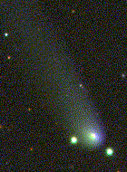

The Sloan Digital Sky Survey has found its first new comet, the latest in a series of interesting treasures mined from the Survey's test-year data.
Julianne Dalcanton, an SDSS astronomer from the University of Washington, was sifting through test run data from March 20. She was using a "fuzzy blob" search algorithm to find faint galaxies for her research. But in addition to many fuzzy-looking galaxies, the algorithm also yielded an elongated fuzzy blob with a bright splotch at one end. In other words, Dalcanton had found a comet in the SDSS data. Along with SDSS astronomers Steve Kent and Sadanori Okamura, Dalcanton reported the discovery to the Central Bureau for Astronomical Telegrams.
It turns out that Dalcanton's sighting wasn't actually the first detection of this particular heavenly body. Near Earth Object (NEO) surveys had observed the object several times, up to a year earlier. Based on Dalcanton's report of the comet's position and motion, Gareth Williams of the IAU Minor Planet Center located the object in the LINEAR project database, and Gene Magnier of the University of Washington produced another observation from the LONEOS survey. However, the NEO surveys had merely classified the object as "apparently asteroidal," not as an actual comet. Comet C/1999 F2 was therefore officially named Comet Dalcanton, in recognition of her correct identification.
The Sky Survey seems to be acquiring a reputation for finding unusual and interesting objects during its ongoing test phase. The SDSS is first and foremost a survey of distant galaxies and quasars in an effort to map the large-scale structure of the universe, and it has already distinguished itself in this arena by finding some of the most distant quasars known. But in the process of surveying one-quarter of the sky, the 2.5-meter SDSS telescope will also image millions of objects in our own Milky Way galaxy. Many of these objects, such as the recently discovered methane dwarfs, are interesting in their own right.
Comet Dalcanton is no exception to this trend of interesting finds. It is one of only a few known comets that are thought to come from the inner Oort Cloud, a collection of billions of cometary bodies around our solar system that are thousands of times further from the sun than Earth is. Comet Dalcanton also didn't make it especially far into our solar system, compared to comets that we can see with the unaided eye. It reached its perihelion (distance of closest approach to the sun) just inside the orbit of Jupiter in August 1998, and is now on its way back to the Oort Cloud. It will travel further away than almost all other known periodic comets.
Despite not having come very close to the sun, Comet Dalcanton has an especially prominent tail. Such comets beyond the inner solar system often escape detection because they lack visible tails. Comet tails form as the icy outer layers of the comet are vaporized by the sun and then blown in the direction away from the sun by radiation pressure and the solar wind. Each time a periodic comet comes back to perihelion, the tail becomes weaker as less material is available to evaporate. So, on the basis of Comet Dalcanton's significant tail, astronomers suspect this is the comet's first foray near the sun.
This won't be Comet Dalcanton's last visit to our part of the solar system, according to the SDSS and NEO surveys' data. But don't hold your breath; the comet's round trip will take 186,000 years.